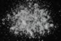

|
|
(For further information on spectroscopy, see:
http://speclab.cr.usgs.gov)
TITLE: Anhydrite GDS42 DESCRIPT
DOCUMENTATION_FORMAT: MINERAL
SAMPLE_ID: GDS42
MINERAL_TYPE: Sulfate
MINERAL: Anhydrite
FORMULA: CaSO4
FORMULA_HTML: CaSO4
COLLECTION_LOCALITY: New Mexico
ORIGINAL_DONOR: Gem Show purchase
CURRENT_SAMPLE_LOCATION: USGS Denver Spectroscopy Laboratory
ULTIMATE_SAMPLE_LOCATION: USGS Denver Spectroscopy Laboratory
SAMPLE_DESCRIPTION:
This sample was purchased at a Gem show. The sample is probably from New Mexico, but that is not 100% certain. The sample appears white with no contamination. The reflectance spectrum indicates virtually no contamination. There are very weak bands in the visible, possibly indicating some iron, but it is not apparent visually under a hand lens.
IMAGE_OF_SAMPLE:

END_SAMPLE_DESCRIPTION.
XRD_ANALYSIS:
40 kV - 30 mA, 6.5-9.5 keV
Reference: JCPDS #6-226; Huebner's reference patterns
Found: Anhydrite
Sought but not found: gypsum
Comment: Extremely sharp reflections indicate good crystallinity. Excellent
match up with the JCPDS card.
J.S. Huebner, J. Pickrell, and T. Schaefer, 1994, written communication.
END_XRD_ANALYSIS.
COMPOSITIONAL_ANALYSIS_TYPE: None # XRF, EM(WDS), ICP(Trace), WChem
COMPOSITION_TRACE: None
COMPOSITION_DISCUSSION:
None
END_COMPOSITION_DISCUSSION.
MICROSCOPIC_EXAMINATION:
Bimodal grain size distribution:
population 1 170µm 82 vol%
population 2 10µm 18 vol%
avg. grain size of populations = 154µm
Prismatic grains, good cleavage, light blue color in hand specimen. Trace of opaques. High birefringence and biaxial (+). All these are consistent with anhydrite. Twinning parallel to long dimension. Smaller grains adhere extensively to larger grains. G. Swayze
END_MICROSCOPIC_EXAMINATION.
SPECTROSCOPIC_DISCUSSION:
END_SPECTROSCOPIC_DISCUSSION.
SPECTRAL_PURITY: 1a2a3a4_ # 1= 0.2-3, 2= 1.5-6, 3= 6-25, 4= 20-150 microns
| LIB_SPECTRA_HED: | where | Wave Range | Av_Rs_Pwr | Comment |
|---|---|---|---|---|
| LIB_SPECTRA: | splib04a r 423 | 0.2-3.0µm | 200 | g.s.= 154 µm |
| LIB_SPECTRA: | splib05a r 1049 | 0.2-3.0µm | 200 | g.s.= |
| LIB_SPECTRA: | splib06a r 2442 | g.s.= | ||
| LIB_SPECTRA: | splib06a r 2454 | g.s.= |
{kind=link}